Vibration Theory and Terminology
Vibration Theory and Terminology
Vibration Theory
The designs and engineering requirements of vehicles have undergone drastic changes over the last several years.
Vehicles are stiffer and provide more isolation from road input than they did previously. The structures of today's stiffer vehicles are less susceptible to many of the vibrations which could be present in vehicles of earlier designs, however, vibrations can still be detected in a more modern vehicle if a transfer path is created between a rotating component and the body of the vehicle.
There are not as many points of isolation from the road in many vehicles today. If a component produces a strong enough vibration, it may overcome the existing isolation and the component needs to be repaired or replaced.
The presence/absence of unwanted noise and vibration is linked to the customer's perception of the overall quality of the vehicle.
Vibration is the repetitive motion of an object, back and forth, or up and down. The following components cause most vehicle vibrations:
* A rotating component
* The engine combustion process firing impulses
Rotating components will cause vibrations when excessive imbalance or runout is present. During vibration diagnosis, the amount of allowable imbalance or runout should be considered a TOLERANCE and not a SPECIFICATION. In other words, the less imbalance or runout the better.
Rotating components will cause a vibration concern when they not properly isolated from the passenger compartment: Engine firing pulses can be detected as a vibration if a motor mount is collapsed.
A vibrating component operates at a consistent rate (km/h, mph, or RPM). Measure the rate of vibration in question. When the rate/speed is determined, relate the vibration to a component that operates at an equal rate/speed in order to pinpoint the source. Vibrations also tend to transmit through the body structure to other components. Therefore, just because the seat vibrates does not mean the source of vibration is in the seat.
Vibrations consist of the following three elements:
* The source - the cause of the vibration
* The transfer path - the path the vibration travels through the vehicle
* The responder - the component where the vibration is felt
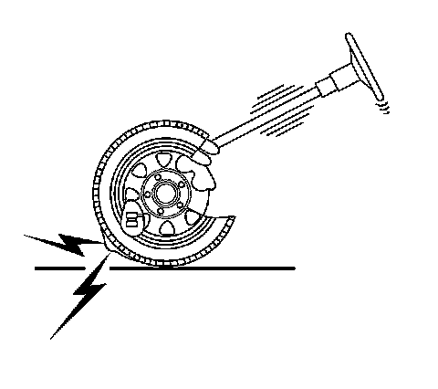
In the preceding picture, the source is the unbalanced tire. The transfer path is the route the vibrations travels through the vehicle's suspension system into the steering column. The responder is the steering wheel, which the customer reports as vibrating. Eliminating any one of these three elements will usually correct the condition. Decide, from the gathered information, which element makes the most sense to repair. Adding a brace to the steering column may keep the steering wheel from vibrating, but adding a brace is not a practical solution. The most direct and effective repair would be to properly balance the tire.
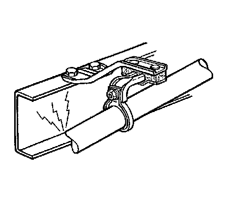
Vibration can also produce noise. As an example, consider a vehicle that has an exhaust pipe grounded to the frame. The source of the vibration is the engine firing impulses traveling through the exhaust. The transfer path is a grounded or bound-up exhaust hanger. The responder is the frame. The floor panel vibrates, acting as a large speaker, which produces noise. The best repair would be to eliminate the transfer path. Aligning the exhaust system and correcting the grounded condition at the frame would eliminate the transfer path.
Basic Vibration Terminology
The following are the 2 primary components of vibration diagnosis:
* The physical properties of objects
* The object's properties of conducting mechanical energy
The repetitive up and down or back and forth movement of a component cause most customer vibration complaints. The following are the common components that vibrate:
* The steering wheel
* The seat cushion
* The frame
* The IP
Vibration diagnosis involves the following simple outline:
1. Measure the repetitive motion and assign a value to the measurement in cycles per second or cycles per minute.
2. Relate the frequency back on terms of the rotational speed of a component that is operating at the same rate or speed.
3. Inspect and test the components for conditions that cause vibration.
For example, performing the following steps will help demonstrate the vibration theory:
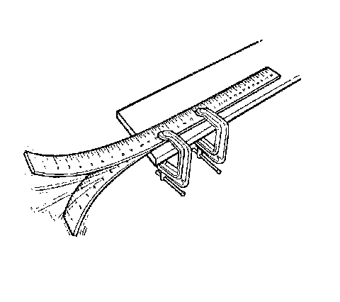
1. Clamp a yardstick to the edge of a table, leaving about 50 cm (20 in) hanging over the edge of the table.
2. Pull down on the edge of the stick and release while observing the movement of the stick.
The motion of the stick occurs in repetitive cycles. The cycle begins at midpoint, continues through the lowest extreme of travel, then back past the midpoint, through the upper extreme of travel, and back to the midpoint where the cycle begins again.
The cycle occurs over and over again at the same rate, or frequency. In this case, about 10 cycles in one second. If we measure the frequency to reflect the number of complete cycles that the yardstick made in one minute, the measure would be 10 cycles x 60 seconds = 600 cycles per minute (cpm).
We have also found a specific amount of motion, or amplitude, in the total travel of the yardstick from the very top to the very bottom. Redo the experiment as follows:
1. Reclamp the yardstick to the edge of a table, leaving about 25 cm (10 in) hanging over the edge of the table.
2. Pull down on the edge of the stick and release while observing the movement of the stick.
The stick vibrates at a much faster frequency: 30 cycles per second (1,800 cycles per minute).
Cycle
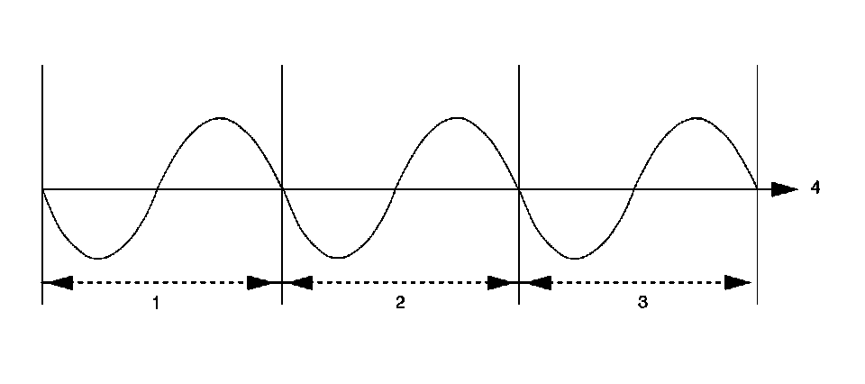
1 - 1st Cycle
2 - 2nd Cycle
3 - 3rd Cycle
4 - Time
Vibration Cycles in Powertrain Components
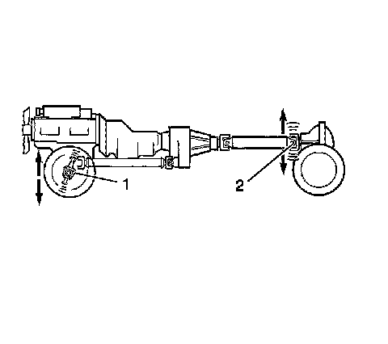
1 - Spindle
2 - Pinion Nose
The word cycle comes from the same root as the word circle. A circle begins and ends at the same point, as thus, so does a cycle. All vibrations consist of repetitive cycles.
Frequency

1 - Amplitude
2 - Reference
3 - Time in Seconds
4 - 1 Second
Frequency is defined as the rate at which an event occurs during a given period of time. With a vibration, the event is a cycle, and the period of time is 1 second. Thus, frequency is expressed in cycles per second.
The proper term for cycles per seconds is Hertz (Hz). This is the most common way to measure frequency. Multiply the Hertz by 60 to get the cycles or revolutions per minute (RPM).
Amplitude
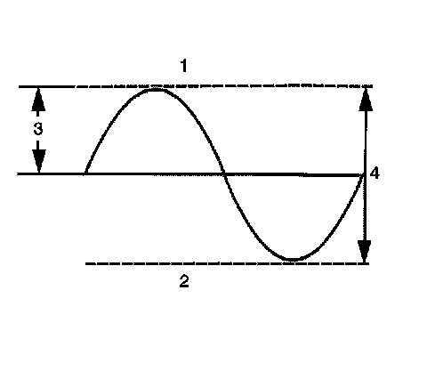
1 - Maximum
2 - Minimum
3 - Zero-to-Peak Amplitude
4 - Peak-to-Peak Amplitude
Amplitude is the maximum value of a periodically varying quantity. Used in vibration diagnostics, we are referring it to the magnitude of the disturbance. A severe disturbance would have a high amplitude; a minor disturbance would have a low amplitude.
Amplitude is measured by the amount of actual movement, or the displacement. For example, consider the vibration caused by an out-of-balance wheel at 80 km/h (50 mph) as opposed to 40 km/h (25 mph). As the speed increases, the amplitude increases.
Free Vibration
Free vibration is the continued vibration in the absence of any outside force. In the yardstick example, the yardstick continued to vibrate even after the end was released.
Forced Vibration
Forced vibration is when an object is vibrating continuously as a result of an outside force.
Centrifugal Force Due to an Imbalance
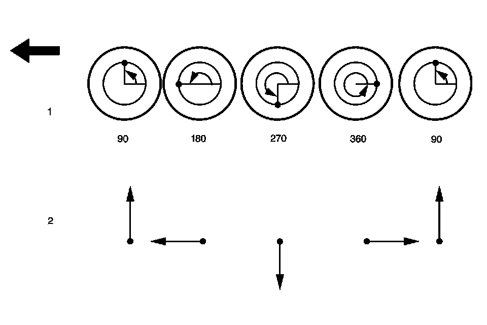
1 - Location of Imbalance (Degrees)
2 - Centrifugal Force Acting on Spindle
A spinning object with an imbalance generates a centrifugal force. Performing the following steps will help to demonstrate centrifugal force:
1. Tie a nut to a string.
2. Hold the string. The nut hangs vertically due to gravity.
3. Spin the string. The nut will spin in a circle.
Centrifugal force is trying to make the nut fly outward, causing the pull you feel on your hand. An unbalanced tire follows the same example. The nut is the imbalance in the tire. The string is the tire, wheel, and suspension assembly. As the vehicle speed increases, the disturbing force of the unbalanced tire can be felt in the steering wheel, the seat, and the floor. This disturbance will be repetitive (Hz) and the amplitude will increase. At higher speeds, both the frequency and the amplitude will increase. As the tire revolves, the imbalance, or the centrifugal force, will alternately lift the tire up and force the tire downward, along with the spindle, once for each revolution of the tire.
Natural or Resonant Frequency
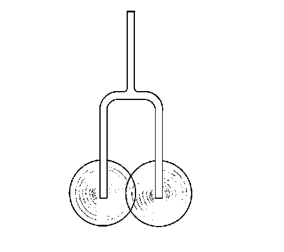
The natural frequency is the frequency at which an object tends to vibrate. Bells, guitar strings, and tuning forks are all examples of objects that tend to vibrate at specific frequencies when excited by an external force.
Suspension systems, and even engines within the mounts, have a tendency to vibrate at certain frequencies. This is why some vibration complaints occur only at specific vehicle speeds or engine RPM.
The stiffness and the natural frequency of a material have a relationship. Generally, the stiffer the material, the higher the natural frequency. The opposite is also true. The softer a material, the lower the natural frequency. Conversely, the greater the mass, the lower the natural frequency.
Resonance
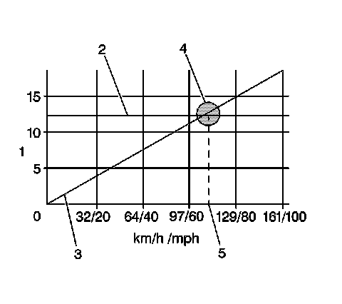
1 - Frequency - cps
2 - Suspension Frequency
3 - Unbalanced Excitation
4 - Point of Resonance
5 - Problem Speed
All objects have natural frequencies. The natural frequency of a typical automotive front suspension is in the 10-15 Hz range. This natural frequency is the result of the suspension design. The suspension's natural frequency is the same at all vehicle speeds. As the tire speed increases along with the vehicle speed, the disturbance created by the tire increases in frequency. Eventually, the frequency of the unbalanced tire will intersect with the natural frequency of the suspension. This causes the suspension to vibrate. The intersecting point is called the resonance.
The amplitude of a vibration will be greatest at the point of resonance. While the vibration may be felt above and below the problem speed, the vibration may be felt the most at the point of resonance.
Damping
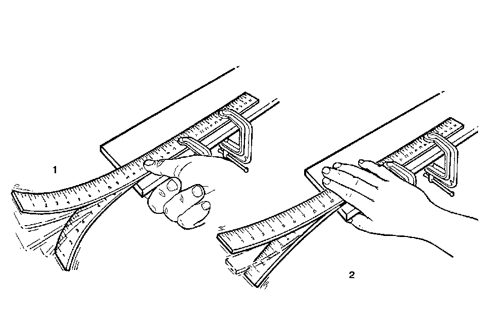
1 - Low Damping
2 - High Damping
Damping is the ability of an object or material to dissipate or absorb vibration. The automotive shock absorber is a good example. The function of the shock absorber is to absorb or dampen the oscillations of the suspension system.
Beating (Phasing)
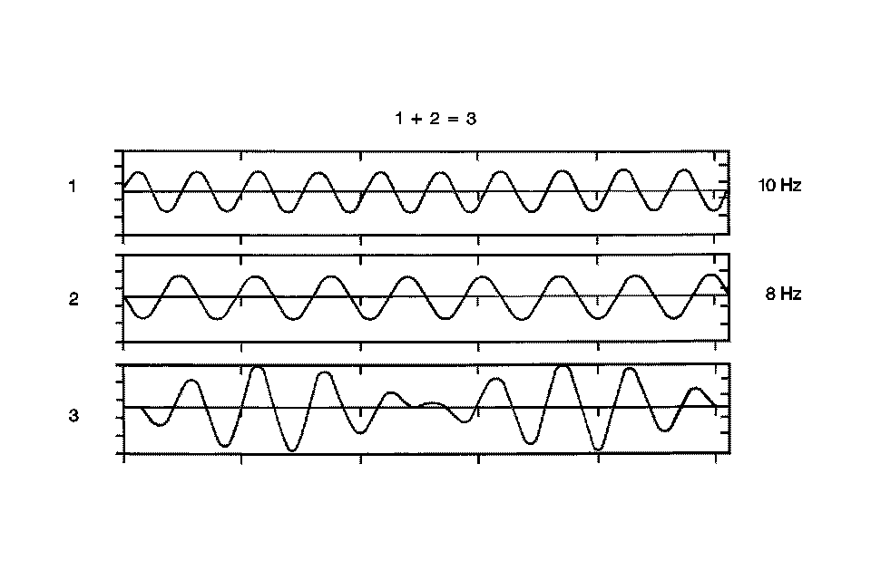
Two separate disturbances that are relatively close together in frequency will lead to a condition called beating, or phasing. A beating vibration condition will increase in intensity or amplitude in a repetitive fashion as the vehicle travels at a steady speed. This beating vibration can produce the familiar droning noise heard in some vehicles.
Beating occurs when 2 vibrating forces are adding to each other's amplitude. However, 2 vibrating forces can also subtract from each other's amplitude. The adding and subtracting of amplitudes in similar frequencies is called beating. In many cases, eliminating either one of the disturbances can correct the condition.
Order
Order refers to how many times an event occurs during 1 revolution of a rotating component.
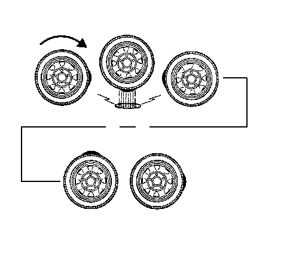
For example, a tire with 1 high spot would create a disturbance once for every revolution of the tire. This is called first-order vibration.
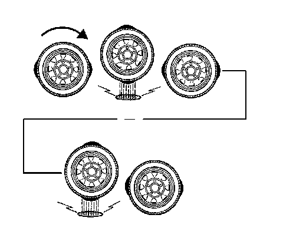
An oval-shaped tire with 2 high spots would create a disturbance twice for every revolution. This is called second-order vibration. Three high spots would be third-order, and so forth. Two first-order vibrations may add or subtract from the overall amplitude of the disturbance, but that is all. Two first-order vibrations do not equal a second-order. Due to centrifugal force, an unbalanced component will always create at least a first-order vibration.